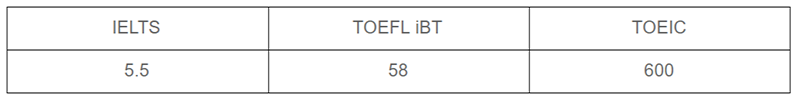
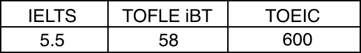

(School名）は
完全オンラインでDiploma(准学士号)を取得可能！
卒業後は提携大学への進学が可能！最短2年で学士号も取得可能
一般的なプログラミングスクールの1/3、海外大学留学の1/4の学費 充実した奨学金もご用意！
英国基準を満たしたカリキュラムにより、高度IT人材として即戦力となれる
全て英語で行われるプログラムなので、英語力を向上させることが可能。理解度に応じて日本語での補足説明を行います
英国政府より認可、監督を受けた機関である
『ATHE』の認定済み
ATHEより弊社のプログラムは認定を受け、また監督を受けておりますので、弊 社のプログラム内容は完全に英国基準となります。
留学までの流れ
1オンラインでの
授業受講と課題提出
実践的なカリキュラムで最新のプログラミング技術を学びます。
授業頻度：週1～2回
期間：1年間
2学位の取得、留学準備
コンピュータサイエンス分野にて、提携している大学の留学要件を満たす、Diploma（准学士号）を取得
※医学部進学のためのメディカルパスもご用意しています
3提携先大学での留学
留学先の国：英国・オーストラリア・アメリカ・キプロス・チェコ・カナダ・ニュージーランド
提携大学：
Angria rusking University
卒業まで：イギリス・オーストラリアは1年後、アメリカは2年後に卒業、キプロス、チェコ、USの提携メディカルスクールは5年後に卒業
これからの時代に求められる高度な専門性×ITの知識を持った
高度IT人材が、圧倒的に不足しています。
複雑な現代社会で活躍を目指すビジネスパーソン・学生こそ、
「コンピュータサイエンス分野の学位」を取得する意義があるのです。

Cowriting school of business and computingなら
高度IT人材の即戦力として活躍が出来るようになります
今まで日本にはなかった、海外の一流の教育プログラムを導入！
だからこそ、現代社会において活躍できる、実践的技能を持った高度IT人材になれる！
コンピューターサイエンスの分野において、提携した英国大学への留学要件を満たすためのDiploma（准学士号）プログラムを提供しています。
最新のプログラミング技術を学び、ゲーム開発、Webサービス開発、競技プログラミング、チーム開発など、より実践的なハンズオンを通して、即戦力として活躍可能な実力を身につけることができます。
初学者フォローアップも充実しているため、安心して学ぶことが可能です。
シラバス
Introduction of computing
Basic programming
with Unity
Web service development
1 with Firebase
Software engineering
Web service development
2 with Laravel
Project based development
Creative Engineering
Computer Science
合計で 80 classあります。各クラスは 90 minです。
外部の講師を招いた特別講義や、補習を兼ねた追加講義を行うことがあります。
Academic writingなど一部の座学のclassは動画講義として開講します。
授業資料※一部抜粋
取得学位
本コースを修了する事によって、コンピューターサイエンスの分野においてDiplomaを取得する事が出来ます。
必要な英語力
 本コースの魅力的な費用
99万円（税抜き）【109万円（税込み）
医学部ご選択の場合は、別途arrange費用が40万円（税込み）となります。
また、英語学習サポート等のオプションプランご希望の場合も、追加費用が発生いたします。
Cowriting school of business and computingが
選ばれる４つの理由
01学位取得によりキャリアパスが広がる
企業へ就職から、大学進学まで幅広いキャリアを歩むことができます！
1：企業に就職し、即戦力高度IT人材に。
2：イギリス, アメリカ, オーストラリアの提携大学へ編入し、イギリスとオーストラリアは1年後に、アメリカは2年後に卒業できる(※1)
3：キプロス、チェコ、USの提携メディカルスクールへ入学し、5年で卒業できる(※2)
4：提携大学卒業後、海外の大学院への進学(サポートあり)
02充実の奨学金制度
多様な奨学金制度を利用して学費を賄うことができます！
1：完全給付型 返済なし。成績優秀者のみ。70%学費カット
2：全額奨学金 企業と生徒のマッチングによる企業スポンサードの完全奨学金(調整中)
3：医学部奨学金 医学部の学費全額、生活費提供(現状キプロスのみ、他国へも展開予定)
03特徴的なシラバス
1：通常2年で学ぶことを、1年で学べます。フルタイムではなくパートタイムのプログラムなので、働きながらでも受講が可能です。
2：講義はビデオとライブのミックス配信。実践的で革新的なこれまでにないプログラム内容となっています。
3：理論と実践の両軸で学び、企業の即戦力となる高度IT人材を育成します。高度かつ多様性したIT社会において活躍できる問題発見型高度IT人材を輩出します。
4：英語によるインタラクティブな授業を提供します。全てのプログラム内容は提携大学及び認定機関より監視監督を受けており、品質が担保されています。業界で活躍している著名人や提携先大学の教授を招いての特別イベントなど、徹底的なキャリアサポートなども魅力です

04徹底したフォローアップ体制
1：いつでもzoomなどで個別にチュータリングを受けることが出来る
2：24時間オンラインチャット等で質問をすることができる
3：語学力向上施策を受けることが可能(28カ国講師のオンライン語学スクールで英語力向上、AIによるTOEFL/IELTSのライティングセクション添削・スピーキング分析強化)※別途有料の場合がございます
4：学生が意見を交換できるコミュニティボードの設置や学生会により、学生同士が情報交換することができる。
※1:UKとAUは3年次に編入し1年で卒業。USは、3年次に編入し2年後卒業。
※2:キプロスではヨーロッパとアメリカの医師免許、チェコではヨーロッパとオースト
ラリア免許、アメリカではアメリカの医師免許を取得。
日本の医師免許取得サポートあり(海外医学部卒業者も厚労省の個別審査によって医師国
家試験の受験資格が与えられることがありますが、一般的には手続きが大変煩雑であり、
留学先海外大学医学部ではサポートは提供されていません)。
進学可能な国
イギリス
アメリカ
オーストラリア
チェコ
キプロス
カナダ
ニュージーランド
提携大学
Anglia Ruskin university
名門ロンドン大学・ニコシア大学の2つの学位を取得する
ダブル・ディグリーが可能です！
キプロス（ニコシア大学）へ進学の場合、名門ロンドン大学との提携もあるため、卒業するとロンドン大学の学位も取得することが可能です。
そうすると、キプロス、EU両方で医者の資格を取得することができ、キャリアパスが広がります。
提携大学に関する詳細はカウンセリングにて！
※上記表記の大学は2021年9月開講時予定の提携大学となります。今後変更等がある可能性があります。
まずは無料!入学カウンセリング予約へ！
各大学の詳細、寮の有無、奨学金などの詳細情報も取り揃えてお
りますのでお気軽にお問い合わせください。
お申し込みフォーム
お電話でのお問い合わせはこちら